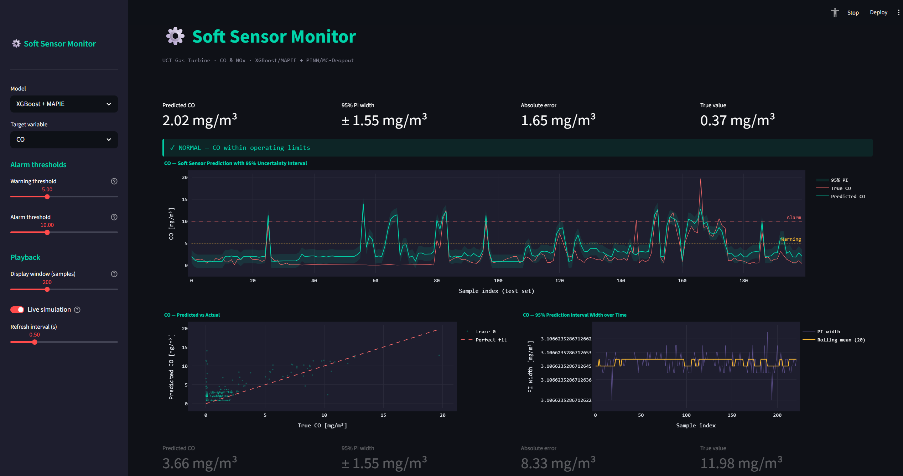

Process & Plant Systems
Manufacturing operations, process performance, troubleshooting, reaction systems, combustion, maintenance interfaces and process optimization.
Ernest Amoh · Process Engineer
Process engineer with a Chemical Engineering background, more than three years of manufacturing operations experience, and currently completing an MSc at the University of Stuttgart.
01 / Profile
Before beginning my MSc, I spent more than three years in manufacturing operations, progressing from process operations into production supervision.
That experience taught me how process stability, maintenance coordination, production data, safety, and operator decisions interact in real industrial systems.
I now combine that operational perspective with process simulation, CFD, environmental systems, energy systems, and engineering data analysis to investigate and improve physical processes.
Engineering Scope
My work is anchored in process engineering and extends into the physical, environmental and data-driven systems surrounding industrial operations.
Manufacturing operations, process performance, troubleshooting, reaction systems, combustion, maintenance interfaces and process optimization.
Aspen Plus, OpenFOAM, transport phenomena, multiphase flow, atmospheric CFD, turbulence, thermodynamics and numerical analysis.
Syngas systems, CO₂ capture, combustion, carbon intensity, industrial energy use, forecasting and cleaner process operation.
Air quality, pollutant dispersion, emissions, wastewater treatment, aeration systems, environmental monitoring and process performance.
02 / Selected Engineering Work
Selected work spanning industrial monitoring, wastewater process engineering, atmospheric transport, and energy-system analysis.

Physics-informed estimation of CO and NOx emissions from operational telemetry when conventional exhaust measurements become unreliable.
High-temperature exhaust sensors can drift or fail, creating monitoring gaps during transient plant operation.
Developed an uncertainty-aware neural soft sensor constrained by thermodynamic relationships and evaluated using existing operational variables.
Numerical comparison of diffuser arrangements to understand how aeration layout influences circulation, gas distribution, low-velocity zones and dissolved-oxygen uniformity.
Equal airflow does not guarantee equal treatment performance when diffuser placement produces different circulation and gas-holdup patterns.
Compare distributed, central and lateral diffuser configurations using the same tank geometry, flow conditions, diffuser area and total airflow.

Site-resolved CFD investigation of atmospheric pollutant dispersion under varying meteorological conditions across realistic terrain, buildings and industrial structures.
Wind direction, atmospheric flow and building wakes influence plume transport, recirculation, dilution and local pollutant concentration.
Combined terrain and building geometry with atmospheric boundary-layer simulations, Eulerian concentration fields and Lagrangian particle transport.

Multi-horizon forecasting workflow combining German power, weather and market data to investigate electricity demand and carbon-intensity prediction.
Approximately 80,000 hourly observations across energy-system, weather and market variables.
Benchmarked recursive XGBoost models against zero-shot Chronos-T5 across multiple forecast horizons.
03 / Technical Toolkit
Tools are selected according to the physical or operational problem rather than treated as the engineering outcome.
Process Simulation
Thermodynamics
Heat & Mass Transfer
Reaction Engineering
Process Optimization
Operating-Data Analysis
Aspen Plus
OpenFOAM
CFD
Multiphase Flow
Turbulence Modelling
Atmospheric Dispersion
Python
MATLAB
PyTorch
XGBoost
Scikit-Learn
Time-Series Forecasting
Plant Performance
Wastewater Systems
Emissions Monitoring
Air Quality
Energy Systems
Carbon Capture
Education
MSc Candidate in Air Quality Control, Solid Waste and Wastewater Process Engineering
2024 — PresentFoundation
BSc Chemical Engineering · First Class
2016 — 202004 / Contact
I am interested in process, plant, simulation, environmental, energy and industrial engineering roles where process understanding and quantitative methods can improve physical systems.